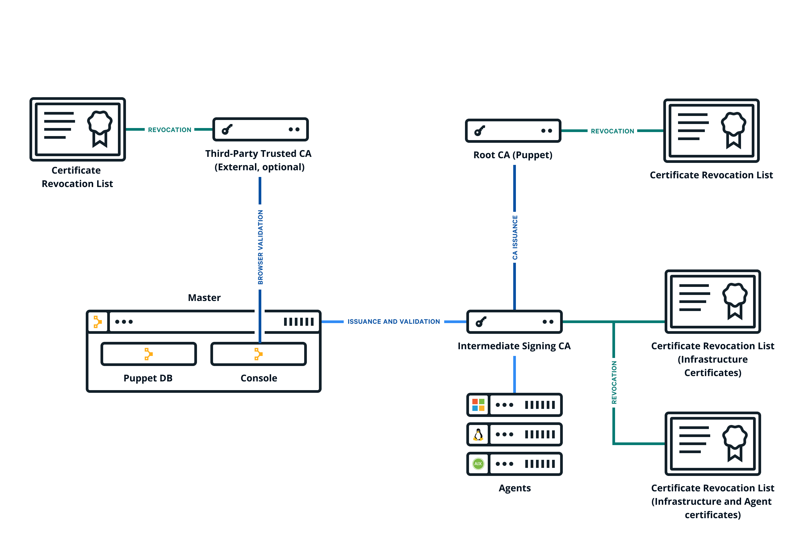

Use a custom SSL certificate for the console
The console uses a certificate signed by PE's built-in certificate authority (CA). Because this CA is specific to PE, web browsers don't know it or trust it, and you have to add a security exception in order to access the console. You might find that this is not an acceptable scenario and want to use a custom CA to create the console's certificate.
Before you begin
- You should have a X.509 cert, signed by the custom party CA, in PEM format, with matching private and public keys.
- If your custom cert is issued by an intermediate CA, the CA bundle needs to contain a complete chain, including the applicable root CA.
- The keys and certs used in this procedure must be in PEM format.

Result:
You should now be able to navigate to your console and see the custom certificate in your browser.